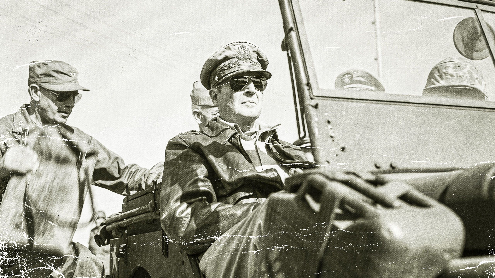

Introduction
Douglas MacArthur was an American general best known for his role in the Pacific theater during World War II, his leadership in the Korean War, and his significant influence in the post-war occupation of Japan. He is widely regarded as one of the most prominent military leaders in U.S. history.
Key Achievements of Douglas MacArthur
- Commanded Allied forces in the Pacific during World War II, overseeing major victories like the Battle of Midway and the Philippines Campaign.
- Accepted Japan's surrender in 1945, leading the occupation and reconstruction of Japan.
- Led the United Nations forces during the Korean War, famously conducting the Inchon Landing in 1950.
- Was awarded the Medal of Honor for his service in World War I.
Important Events During MacArthur’s Military Career
- 1914-1917: Served in World War I, earning the Medal of Honor for his bravery.
- 1941-1945: Commanded U.S. forces in the Pacific during World War II, playing a central role in the defeat of Japan.
- 1945: Oversaw the occupation and reconstruction of Japan, promoting democratic reforms.
- 1950-1951: Led the UN forces during the Korean War, achieving the successful Inchon Landing.
- 1951: Relieved of his command by President Truman due to disagreements over war strategy in Korea.
Learn More
For more detailed information about Douglas MacArthur, you can visit this Wikipedia page.
